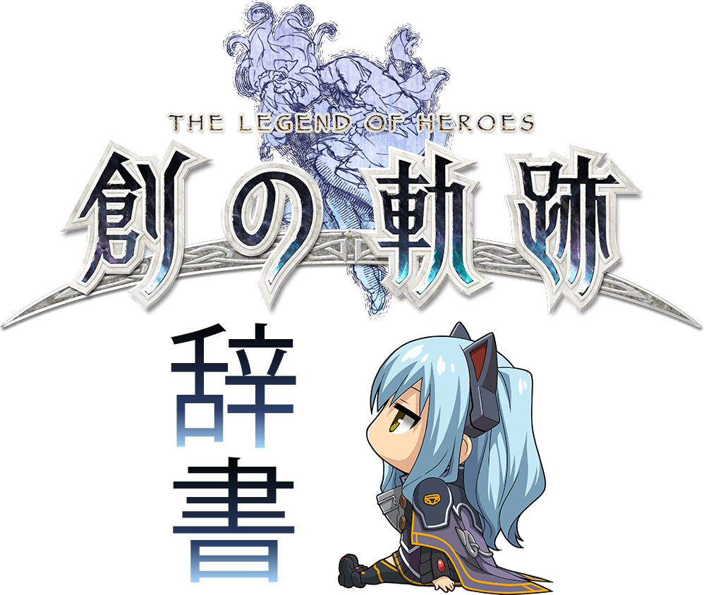

Welcome to the Hajimari no Kiseki Jisho. Here you will find a list of Japanese words/phrases encountered in-game, along with their readings and English definitions, to help assist you in learning and memorizing new words as you fight to liberate Crossbell and explore the True Reverie Corridor.
A basic understanding of hiragana and katakana is recommended, but if you are lazy, like Randy, you can use romaji. Lastly, I will be providing navigational support and managing your settings, so please feel free to call on me at anytime from the top right.


General
| はい hai |
Yes; OK |
| いいえ iie |
No |
| 決定 kettei |
Confirm |
| 戻る modoru |
Back; Return |
| やめる yameru |
Stop; Cancel pretty similar function to 戻る only you're ceasing an activity or action.. so yes, basically "back." |
Field
| General | |
|---|---|
| 調べる shiraberu |
Examine |
| 話す hanasu |
Talk |
| カード kaado |
Card Play vantage masters |
| 開ける akeru |
Open Shown on treasure boxes. |
| ○○を手に入れた xx wo te ni ireta |
XX Obtained Shown after opening a treasure box. |
| 操作する sousa suru |
Operate Shown on operable devices, such as switches. |
| 登る noboru |
Climb |
| 降りる oriru |
Descend |
| 飛び降りる tobioriru |
Jump down |
| ヘルプ herupu |
Help |
| 夢幻回廊へ入る mugen kairou he hairu |
Enter the Reverie Corridor Option on Cross Story menu (right d-pad) |
| The following options are shown when holding L2. | |
| ミッションメニュー misshon menyuu |
Misson Menu |
| アイテムメニュー aitemu menyuu |
Item Menu |
| アーツメニュー aatsu menyuu |
Arts Menu |
| These two options are available while an event scene is paused. | |
| 次のシーンへ tsugi no shiin he |
Next Scene Triangle |
| 全てスキップ subete sukippu |
Skip All Scenes Square |
Fishing |
| 釣りをする tsuri wo suru |
Fish |
| The following is shown while fishing. | |
| 切れる kireru |
Break; Snap (e.g. the line snaps) |
| 逃げる nigeru |
Escape |
| ゲット！ getto! |
GET! |
| The following is shown after catching a fish. | |
| ○○を釣り上げた！ xx wo tsuri ageta! |
Caught XX! |
| リジュ riju |
Rege |
| 最大記録 saidai kiroku |
Largest Record |
| 記録保持者 kiroku hojisha |
Record Holder |
| 魚種類 sakana shurui |
Types of Fish (caught) | Bike |
| バイクに乗る baiku ni noru |
Ride bike |
| バイクから落ちる baiku kara ochiru |
Get off bike |
| バイク設定 baiku settei |
Customize bike |
| アクセル akuseru |
Accelerate |
| ブレーク／バック bureeku/bakku |
Brake/Back up |
| The following is shown during bike customization. | |
| バイク切替 baiku kirikae |
Change bike |
| 回転 kaiten |
Rotate |
| 拡大／縮小 kakudai/shukushou |
Zoom In/Out lit. Enlarge/Shrink |
| ○○号車 xx gousha |
Bike no. X |
| 操縦者 soujuusha |
Driver |
| 同乗者 doujousha |
Passenger |
| バイクカラー baiku karaa |
Bike color | Horse |
| 馬に乗る uma ni noru |
Ride horse |
| 馬から落ちる uma kara ochiru |
Get off horse |
| 馬設定 uma settei |
Customize horse |
| ダッシュ dasshu |
Dash | Map |
| スクロール sukurooru |
Scroll |
| カメラ操作 kamera sousa |
Move Camera |
| ズーム zuumu |
Zoom |
| 現在地 genzaichi |
Current location |
| 必須イベント hissu ibento |
Main event lit. required event |
| サブイベント sabu ibento |
Sub event |
| やりこみ・他 yarikomi・hoka |
Other |
| 店 みせ |
Shop |
| 守護魔獣 shugo majuu |
Guardian Monster |
| 宝箱 takara bako |
Treasure chest |
| 回復装置 kaifuku souchi |
Recovery device |
| スイッチ suicchi |
Switch |
| ギミック gimikku |
Gimmick |
| 釣りポイント tsuri pointo |
Fishing point |
| The following map icons are unique to the reverie corridor. | |
| 中枢核石 chuusuu kakuseki |
Central Terminal *reading needs to be confirmed |
| 黒の幻夢鏡 kuro no genmu kyo |
Black Phantasmal Mirror |
| 解きの台座 hodoki no daiza |
Pedestal of Unsealing |
| 陽炎工房 kagerou koubou |
Mirage Workshop |
| 千年宝庫 sen nen houko |
Millenium Treasury |
| 追憶の石盤 tsuioku no sekiban |
Slate of Recollection |
| 試練の扉 shiren no tobira |
Door of Trials |
| 星霊樹 seireiju |
Celestial Spirit Tree *reading needs to be confirmed |
| 遊戯の方石 yuugi no houseki |
Game Cube |
| 上層に進む jousou ni susumu |
Proceed to upper layer |
| 下層に戻る kasou ni modoru |
Return to lower layer |
| 虚無の楔 kyomu no kusabi |
Void Wedge |
| ゲート geeto |
Gate | Message Log |
| メッセージ messeeji |
Message |
| Aボイス A boisu |
Active Voice |
| 最古 saiko |
Oldest |
| 最新 saishin |
Newest |
| ボイス再生 boisu saisei |
Playback Voice | Party Select |
| 並び順変更 narabi jun henkou |
Change Sorting Sorts characters by lv, hp, etc. |
| クオーツ／装備変更 kuootsu/soubi henkou |
Change Equipment/Quartz Type depends on the selected tab: 装備(equipment) or クオーツ(quartz). |
| 自動装備 jidou soubi |
Auto-equip Like above, it depends on the tab selected. Change the tab to auto-equip equipment or quartz. |
| 交代 koutai |
Change (character) |
| メインストーリー mein sutoorii |
Main Story Switches to the main story party selection. |
| 夢幻回廊チーム mugen kairou chiimu |
Reverie Corridor Team Switches to the TRC party selection. |
Quick Travel
| Not all locations are currently available. I will expand this when I do NG+. | Crossbell |
|---|---|
| クロスベル市 kurosuberu shi |
Crossbell City You will see this prefixing all options pertaining to the City of Crossbell. |
| Station Street | |
| 駅前 ekimae |
Station Street lit. station front; in front of the station |
| 駅前通り入口 ekimae toori iriguchi |
Station Street Entrance |
| Central Square | |
| 中央広場 chuuou hiroba |
Central Square |
| 中央広場入口 chuuou hiroba iriguchi |
Central Square Entrance |
| 百貨店《タイムズ》 hyakkaten taimuzu |
Times Department Store |
| オーバルストア《ゲンテン》 oobarusutoa genten |
Genten Orbal Store |
| ジロンド武器商会 jirondo buki shoukai |
Gironde Armory |
| カフェレストラン《ヴァンセット》 kafe resutoran vansetto |
Ving-Sept Cafe |
| 特務支援課 tokumushienka |
Special Support Section |
| East Street | |
| 東通り higashi doori |
East Street |
| 東通り入口 higashi doori iriguchi |
East Street Entrance |
| 宿酒場《龍老飯店》 yado sakaba ryurou hanten |
Long Lao Tavern & Inn |
| 釣公師団・クロスベル支部 tsurikou shidan・kurosuberu shibu |
Fisherman's Guild - Crossbell Branch *reading needs confirmation |
| クロスベル商工組合 kurosuberu shoukou kumiai |
Crossbell Business Owner's Association |
| 交換屋《ナインヴァリ》 koukanya nainvari |
Neinvalli Exchange Shop |
| アパルトメント《アカシア荘》 apatomento akashia shou |
Acacia Apartments |
| 遊撃士協会・クロスベル支部 yuugekishi kyoukai・kurosuberu shibu |
Bracer Guild - Crossbell Branch |
| West Street | |
| 西通り nishi doori |
West Street |
| 西通り入口 nishi doori iriguchi |
West Street Entrance |
| ベーカリー《モルジュ》 beekarii moruju |
Morge's Bakery |
| 食品・雑貨《タリーズ商店》 shokuhin・zakka tariizu shouten |
Tally's General Store |
| アパルトメント《ベルハイム》 aparutomento beruhaimu |
Bellheim Apartments |
| アパルトメント《ヴィラ・レザン》 aparutomento vira・rezan |
Villa Raisins Apartments |
| 法律事務所跡 houritsujimusho ato |
Former Law Office |
| ジオフロントB区画／SⅡエリア jiofuronto B kukaku/S tsuu eria |
Geofront B Sector, S-II Area |
| 西クロスベル街道 nishi kurosuberu kaidou |
West Crossbell Highway |
| Entertainment District | |
| 歓楽街 kanrakugai |
Entertainment District |
| 歓楽街中央 kanrakugai chuuou |
Entertainment District Center |
| 裏通り入口 uradoori iriguchi |
Side Street Entrance |
| 劇団《アルカンシェル》 gekidan arukansheru |
Arc en Ciel Kanji means "troupe; theatrical company" so you could literally call it "Arc en Ciel Theater" |
| 《ホテル・ミレニアム》 hoteru・mireniamu |
Hotel Millennium |
| カジノハウス《バルカ》 kajinohausu baruka |
Barca Casino |
| ジャズバー《ガランテ》 jazubaa garante |
Garante Jazz Bar |
| アンティーク屋《イメルダ》 antiikuya imeruda |
Imelda Antique Shop |
| Harbor District | |
| 港湾区 kouwanku |
Harbor District |
| 港湾区入口 kouwanku iriguchi |
Harbor District Entrance |
| クロスベル通信社 kurosuberu tsushinsha |
Crossbell News Service |
| IBCビル IBC biru |
IBC Building |
| 黒月貿易公司 heiyue boueki koushi |
Heiyue Trading Ltd. |
| Administrative District | |
| 行政区 gyouseiku |
Administrative District |
| 行政区入口 gyouseiku iriguchi |
Administrative District Entrance |
| 市民会館 shiminkaikan |
Civic Center The former city hall. |
| クロスベル警察 kurosuberu keisatsu |
Crossbell Police Department |
| Orchis Tower | オルキスタワー orukisutawaa |
Orchis Tower |
| タワー前 tawaa mae |
Outside |
| エントランス entoransu |
Lobby |
| 屋上 okujou |
Rooftop |
| Crossbell Cathedral | |
| クロスベル大聖堂 kurosuberu daiseidou |
Crossbell Cathedral |
| 大聖堂前 kurosuberu daiseidou mae |
Outside |
| 大聖堂内部 kurosuberu daiseidou naibu |
Inside |
| East Crossbell Highway | |
| 東クロスベル街道 higashi kurosberu kaidou |
East Crossbell Highway |
| 街道 kaidou |
Highway (1, 2, 3...) |
| ボート小屋 booto koya |
Boathouse |
| Old Armorica Road | |
| アルモリカ古道 arumorika kodou |
Old Armorica Road |
| 古道 kodou |
Old Road (1, 2..) |
| Armorica Village | |
| アルモリカ村 arumorika mura |
Armorica Village |
| 村入口 mura iriguchi |
Village Entrance |
| ジェイク雑貨店 jeiku zakkaten |
Jake's General Store |
| 宿酒場《トネリコ亭》 yadosakaba toneriko tei |
Ash Tree Inn トネリコ = 秦皮 a Japanese ash tree. |
| 村長宅 sonchou taku |
Village Chief's House |
| 療養所 ryouyoujo |
Rest Home; Clinic |
| Ancient Battlefield | |
| 古戦場 kosenjou |
Ancient Battlefield |
| 古戦場入口 kosenjou iriguchi |
Entrance |
| 地下通路 chika tsuuro |
Underground Passage |
| 最奥 saiou |
End (of the area); deep inside |
| Mainz Mountain Path | |
| マインツ山道 maintsu sandou |
Mainz Mountain Path |
| 山道 sandou |
Mountain Path (1, 2, 3..) |
| トンネル道 tonneru dou |
Tunnel |
| 僧院前 souin mae |
Before the Temple |
| Rozenberg Studio | |
| ローゼンベルク人形工房 roozenberku ningyou koubou |
Rozenberg Studio lit. doll studio |
| 人形工房 ningyou koubou |
Doll Studio |
| 前 mae |
Outside; Front (of the studio) |
| 最奥 saiou |
End (of the area) |
| Mainz Mining Village | |
| 鉱山町マインツ kouzanmachi maintsu |
Mainz Mining Village |
| 鉱山町入口 kouzanmachi iriguchi |
Mining Village Entrance |
| ベッカライ商店 | Backerei's General Store |
| 宿酒場《赤レンガ亭》 yadosakaba aka renga tei |
Der Ziegel Inn |
| 町長宅 chouchou taku |
Mayor's House |
| Moon Temple | |
| 月の僧院 tsuki no souin |
Moon Temple |
| 最奥 saiou |
End (of the area) |
| 屋上 okujou |
Roof |
| RF Military Factory | |
| RF軍需工場 RF gunjukoujou |
RF Military Factory |
| 軍需工場前 gunjukoujou mae |
Military Factory Front |
| 地下ホーム chika hoomu |
Underground Train Platform |
| Knox Woodlands | |
| ノックス森林道 nokkusu shinrin dou |
Knox Woodlands Road |
| 森林道 shinrin dou |
Woodlands Road (1, 2..) |
| Crossbell Police Academy | |
| クロスベル警察学校 kurosuberu keisatsu gakkou |
Crossbell Police Academy |
| 警察学校前 keisatsu gakkou mae |
Police Academy Front |
| 拘置所 kouchisho |
Prison (1, 2, 3..) |
| 最奥 saiou |
End (of the area) |
| Ursula Road | |
| ウルスラ間道 urusura kandou |
Ursula Road |
| 間道 kandou |
Road (1, 2, 3...) |
| 演習地跡 enshuu chi ato |
Former Field Exercise Camp |
| 星見の塔 hoshimi no tou |
Stargazer's Tower |
| St. Ursula Medical College | |
| 聖ウルスラ医科大学 sei urusura ikadaigaku |
St. Ursula Medical College |
| 医科大学入口 ikadaigaku iriguchi |
Medical College Entrance |
| 病棟 byoutou |
Hospital (1F, 2F, Roof..) |
| 屋上 okujou |
Roof |
| ビュッフェ&イン《レクチェ》 | Lectier Buffet and Inn |
| 地下ホーム chika hoomu |
Underground Train Platform |
| 地下貨物路線 chika kamotsu rosen |
Underground Freight Line |
| 通用路 tsuuyou michi |
Passageway |
| Lake Elm Wetlands | |
| エルム湖湿地帯 erumu mizuumi shicchitai |
Lake Elm Wetlands |
| 湿地帯 shicchitai |
Wetlands (1, 2..) |
| Mishelam | |
| 保養地ミシュラム hoyouchi mishuramu |
Mishelam Resort The sacred land of Mishy.. Tio's paradise!! |
| 波止場 hatoba |
Wharf |
| アーケード aakeedo |
Shopping Arcade |
| 土産・宝飾《サンドリヨン》 miyage・houshoku sandoriyon |
Cendrillon Souvenirs and Jewelry |
| レストラン《フォルトゥナ》 resutoran forutuna |
Fortuna |
| ブティック《コルセリカ》 butikku koruserika |
Colserica Boutique |
| 《ホテル・デルフィニア》 hoteru derufinia |
Hotel Delphinia |
| レイクビーチ reiku biichi |
Lake Beach |
| 別荘地 bessouchi |
Villas |
| MWL; Mishelam Wonderland | ミシュラムワンダーランド mishuramu wandaa rando |
| 入口広場 iriguchi hiroba |
Plaza Entrance |
| 観覧車前 kanransha mae |
Ferris Wheel |
| ホラーコースター前 horaa koosutaa mae |
Horror Coaster |
| 鏡の城 kagami no shiro mae |
Castle of Mirrors (前;front, 1, 2, etc..) |
| 大鏡前 ookagami mae |
Large Mirror |
| 最奥 saiou |
End (of the area) | Thors Branch Campus |
| This area is available during certain episodes. | |
| トールズ第Ⅱ分校 tooruzu dai ni bunkou |
Thors Branch Campus |
| 本校舎前 hon kousha mae |
Main Building Front |
| 校舎入口 kousha iriguchi |
Main Building Entrance |
| 校舎屋上 kousha okujou |
Main Building Rooftop |
| 菜園 saien |
Garden |
| 中庭 nakaniwa |
Courtyard |
| グラウンド guraundo |
Training Grounds |
| クラブハウス kurabuhausu |
Clubhouse |
| プール・訓練場 puuru・kunrenjou |
Pool/Training Hall |
| 学生食堂 gakusei shokudou |
Cafeteria lit. student cafeteria |
| 格納庫 kakunouko |
Hanger |
| 貨物ホーム kamotsu hoomu |
Train Platform | True Reverie Corridor |
| Please see the TRC section. | |
Dialogue Options
| NPC | |
|---|---|
| 話をする hanashi wo suru |
Talk |
| 買い物する kaimono suru |
Shop |
| オススメ「DISH」○○ミラ osusume "DISH" xx mira |
Recommended "Dish" XX Mira |
| オーブメントを調整する oobumento wo chousei suru |
Tune Orbment |
| 武器・クオーツを強化する buki・kuootsu wo kyouka suru |
Customize Weapon/Quartz |
| 交換する koukan suru |
Trade; Exchange |
| 掘り出し物を見る horidashimono wo miru |
View Bargains |
| 魚を卸す sakana wo orosu |
Trade Fish | Orbment Station |
| 休憩する kyuukei suru |
Rest |
| オーブメントの調整 oobumento no chousei |
Tune Orbment |
| 武器・防具の強化 buki・bougu no kyouka |
Customize Weapon/Armor |
| クオーツの強化 kuootsu no kyouka |
Customize Quartz |
| 装備品・道具を購入する soubihin・dougu wo kouynuu suru |
Purchase Equipment/Items |
| 交換する koukan suru |
Trade; Exchange | Millenium Treasury |
| 装備品の購入 soubihin no kounyuu |
Purchase Equipment |
| 道具の購入 dougu no kounyuu |
Purchase Items |
| 衣装・その他の購入 ishou・sonohoka no kounyuu |
Purchase Costume/Other |
| 上位品との交換 jouihin tono koukan |
Exchange Goods |
| 掘り出し物の購入 horidashimono no kounyuu |
Bargains | Mirage Workshop |
| オーブメントの調整 oobumento no chousei |
Tune Orbment |
| 武器・防具の強化 buki・bougu no kyouka |
Customize Weapon/Armor |
| クオーツの強化 kuootsu no kyouka |
Customize Quartz |
| 装備品の分解 soubihin no bunkai |
Dismantle Equipment | Central Terminal |
| 幻夢の欠片の使用 genmu no kakera no shiyou |
Use Dream Fragments |
| ミッションの確認 misshon no kakunin |
Check Missions |
| RPの報告 RP no houkoku |
RP Report |
| 夢幻回廊の組み替え mugen kairou no kumikae |
Rearrange Reverie Corridor |
| 限定ミッションを更新する gentei misshon wo koushin suru |
Update Special Missions |
| 変換する henkan suru |
Convert Shown when using dream fragments; the fragments will be converted into what you selected. |
Other |
| Various other dialogue options that appear throughout the game. Not complete, but will add to over time. If you find something not here, send me a screenshot of it via the contact page. | |
| 戦う tatakau |
Fight Option during TRC boss floors. |
| 先に進む saki ni susumu |
Proceed; Continue Usually shown at the end of a chapter. |
| セーブする seebu suru |
Save |
| 円庭に戻る entei |
Return to the Garden |
| 1つ前のフロアに戻る hitotsu mae no furora ni modoru |
Return to the last floor |
| パーティ編成／装備変更 paati hensei/soubi henkou |
Party Formation/Change Equipment |
| 戦闘を開始する sentou wo kaishi suru |
Begin Battle |
| もう少し準備を整える mousukoshi junbi wo totonoeru |
Prepare a bit more |
| ベッド／ここで休む beddo/koko de yasumu |
Rest here/in bed Option at the Celestial Spirit Tree/Lloyd's bedroom. |
| クリアデータを作成する kuria deeta wo sakusei suru |
Create Clear Data End game option available at the Black Phantasmal Mirror. |
| Options at/in TRC gates. | |
| 潜り抜ける kugurinikeru |
Pass through |
| 夢幻回廊に戻る mugen kairou ni modoru |
Return to the Reverie Corridor |
| 湯に入って寛ぐ | Enter the hot water and relax Option at hotsprings. |
| Options at Void Wedges. | |
| 楔を解除する kusabi wo kaijo suru |
Eliminate Wedge Initiates battle. |
| 初期状態に戻す shokijoutai ni modosu |
Return to Inital State Back to preparation screen. |
| 楔の前に戻る kusabi no mae ni modoru |
Return to the front of the Wedge Exits the Wedge. |
Camp Menu
| General | |
|---|---|
| 隊列変更 tairetsu henkou |
Change Formation D-pad up on camp menu to change party formation. |
| 入れ替え irekae |
Switch X to switch characters when changing formation. |
| リーダー選択 riidaa sentaku |
Select Leader Triangle to set the leader (active field char) when changing formation. |
| Sクラフトをショートカット登録 S kurafuto wo shooto katto touroku |
Set S-Craft as a shortcut Shown on status screen when an S-Craft is selected. |
| The following options are shown on the tactics and link lv screens. | |
| 移動 idou |
Move Move a character's position on the tactics screen. |
| リンク設定 rinku settei |
Link Setting Set or sever links. |
| リンク解除 rinku kaijo |
Sever Link Only shows when hovering over the currently linked character. Pressing will unlink the two characters. |
| ページ切り替え peeji kirikae |
Change Page On link lv screen. |
| The following options are shown on the costume screen, but appear in the equip menu as well. | |
| 表示リセット hyouji risetto |
Reset Display Resets camera/char to default position. |
| 移動 idou |
Move (the character) |
| 回転 kaiten |
Rotate |
| 拡大／縮小 kakudai shukushou |
Zoom In/Out | Equip Menu |
| 自動装備 jidou soubi |
Auto-equip |
| スタイル変更 sutairu henkou |
Change Style (e.g. Gunner, Breaker, Saber..) This option is for Juna/Crow. |
| The following is shown when selecting a piece of equipment. | |
| 装備をはずす soubi wo hazusu |
Unequip |
| 未装備／総数 misoubi/sousuu |
Not Equipped/Total Total disappears when toggled with the touchpad (see options below). |
| 総数を非表示 sousuu wo hihyouji |
Hide Total |
| 総数を表示 sousuu wo hyouji |
Show Total |
| The following is shown when on the auto-equip screen. | |
| 上位装備に自動変更 joui soubi ni jidou henkou |
Automatically change to best equipment |
| 自動装備：バランス jidou soubi：baransu |
Auto-equip: Balance |
| 自動装備：物理優先 jidou soubi：butsuri yuusen |
Auto-equip: Prioritize STR |
| 自動装備：魔法優先 jidou soubi：mahou yuusen |
Auto-equip: Prioritize ATS |
| 自動装備：スピード優先 jidou soubi：supiido yuusen |
Auto-equip: Prioritize SPD |
| アクセサリーを全てはずす akusesarii wo subete hazusu |
Unequip all accessories | Orbment Menu |
| Some options repeat from the Equipment section above. Please see above for terms not listed here, such as auto-equip, unequip, and the auto-equip presets. | |
| クオーツ装備 kuootsu soubi |
Equip Quartz Triangle button when viewing Arts. |
| アーツ一覧 aatsu ichiran |
View Arts Triangle button when viewing Quartz. |
| The following options are shown on the auto-equip screen. | |
| 上位クオーツに自動変更 joui kuootsu ni jidou henkou |
Automatically change to best quartz |
| クオーツ全解除 kuootsu zenkaijou |
Remove all quartz |
| Below are the tabs shown when selecting quartz. | |
| 全て subete |
All |
| ノーマル noomaru |
Normal |
| レア rea |
Rare |
| Sレア S rea |
Super Rare |
| Uレア U rea |
Ultra Rare | Item Menu |
| The following options are shown when using an item. | |
| 使う tukau |
Use |
| 捨てる suteru |
Discard Doesn't ask for confirmation, so don't click confirm carelessly. |
| Below are the different item tabs. | |
| 道具 dougu |
Item |
| 雫 shizuku |
Drop (of a liquid) Status enhancement drops. |
| 武器 buki |
Weapon |
| 防具 bougu |
Armor |
| クオーツ kuootsu |
Quartz |
| 衣装 ishou |
Costume |
| イベント ibento |
Event |
| 素材 sozai |
Ingredient |
Notebook
| General | |
|---|---|
| 手帳 techou |
Notebook |
| 手帳切り替え techou kirikae |
Change Notebook |
| Below are the tabs found in the notebook. | |
| メイン mein |
Main |
| エピソード episoodo |
Episode |
| 戦闘 sentou |
Battle |
| 人物 jinbutsu |
Character |
| 料理 ryouri |
Cooking |
| 釣り tsuri |
Fishing |
| 書物 shomotsu |
Book | Main |
| 総合成績 sougou seiseki |
Overall Records |
| 氏名 shimei |
Full name |
| 捜査官心得 sousakan kokoroe |
Detective Guidelines Lloyd's notebook, right below 氏名. |
| 第Ⅱ分校憲章 dai ni bunkou kenshou |
Branch Campus Pledge Rean's notebook, right below 氏名. |
| 解放ランク kaihou ranku |
Independence Rank |
| 総RP sou RP |
Total RP |
| 試練の扉達成数 shiren no tobira tasseisuu |
Door of Trials completed |
| エピソード閲覧数 episoodo etsuransuu |
Episodes viewed |
| 宝箱回収数 takarabako kaishuusuu |
Treasure Chests collected The pain when you miss one... |
| The rest are the tabs on the left side which are mostly in Katakana and English. I do hope you can read the English ones. | |
| Prologue | プロローグ puroroogu |
| リィンルート riin ruuto |
Rean Route |
| ロイドルート roido ruuto |
Lloyd Route |
| ルーファスルート ruufasu ruuto |
Rufus Route |
| Last Chapter | ラスト・チャプター rasuto・chaputaa |
| 夢幻回廊 mugen kairou |
Reverie Corridor | Episode |
| 達成状況 tassei joukyou |
Completion Status |
| 達成済み tassei sumi |
Completed Shows to the right of 達成状況 when the episode is completed. |
| 報告済み houkoku sumi |
Reported Shows as reported after reporting your RP at the central terminal. |
| 取得ミラ shutoku mira |
Mira Obtained |
| 獲得RP kakutoku RP |
RP Earned |
| 初回ボーナス shokai boonasu |
First Time Bonus |
| 内容 naiyou |
Details I'm not translating these.. m(__)m Use Capture2Text or EasyScreenOCR if you're interested in using the contents for reading practice. |
| ミニゲーム minigeemu |
Minigame You should already know that tab above this from the General section. |
Battle |
| 戦歴 senreki |
Battle Record |
| 情報登録数 jouhou tourokusuu |
Information Recorded |
| Below are the stats for the 戦績 (Results) section. | |
| 戦績 senseki |
Results (of battle) |
| 総戦闘回数 sou sentou kaisuu |
Total Number of Battles |
| 戦闘勝利回数 sentou shouri kaisuu |
Battles Won |
| 戦闘不能回数 sentou funou kaisuu |
KOs |
| 戦闘退却回数 sentou taikyaku kaisuu |
Retreats |
| リトライ回数 ritorai kaisuu |
Retries |
| 敵撃破回数 | Enemies Defeated |
| Below are the stats for the 戦況 (Situation) section. | |
| 戦況 senkyou |
Situation (of battle) |
| 先制攻撃発生回数 senseikougeki hassei kaisuu |
Single Advantages lit. preemptive strike |
| 優勢攻撃発生回数 yuuseikougeki hassei kaisuu |
Double Advantages lit. superior strike |
| 奇襲攻撃発生回数 kishuukougeki hassei kaisuu |
Triple Advantages lit. surprise attack |
| バックアタック発生回数 bakku atakku hassei kaisuu |
Back Attacks |
| Below are the stats for the 戦術 (Tactics) section. | |
| 戦術 senjutsu |
Tactics |
| 追撃発生回数 tsuigeki hassei kaisuu |
Follow-up Attacks |
| ラッシュ発生回数 rasshu hassei kaisuu |
Rushes |
| バースト発生回数 baasuto hassei kaisuu |
Bursts |
| ブレイク発生回数 bureiku hassei kaisuu |
Breaks |
| Bオーダー発生回数 B oodaa hassei kaisuu |
Brave Orders |
| Sクラフト発生回数 S kurafuto hassei kaisuu |
S-Crafts |
| 弱点属性アーツ発生回数 jakuten zokusei aatsu hassei kaisuu |
Elemental Weaknesses Exploited |
| ヴァリアント・レイジ varianto・reiji |
Valiant Rage |
| Vアタック発生回数 V atakku hassei kaisuu |
Valiant Attacks Used |
| Vアーツ発生回数 V aatsu hassei kaisuu |
Vailant Arts Used |
| Vヒール発生回数 V hiiru hassei kaisuu |
Valiant Heals Used | Character |
| 特務支援課 tokumushienka |
Special Support Section Sometimes shortened to 支援課 (Support Section; SSS in localization) in dialogue. |
| 新旧Ⅶ組 shinkyuu nana kumi |
New & Old Class VII |
| ルーファス一行 ruufasu ikkou |
Rufus' Group aka The New Imperial Picnic Squad |
| トールズ関係者 tooruzu kankeisha |
Thors Members |
| 協力者（クロスベル） kyouryokusha (kurosuberu) |
Allies (Crossbell) |
| 協力者（帝国） kyouryokusha (teikoku) |
Allies (Empire) |
| 協力者・その他 kyouryokusha・sonohoka |
Allies/Other |
| EXTRA | エクストラ ekusutora |
| みっしぃ misshii |
Mishy Tio's endless source of happiness! |
| ティオ・プラトー tio・puratoo |
Tio Plato Best girl!!! <3 |
Cooking |
| 料理録 ryouri roku |
Cooking Record |
| 習得レシピ数 shuutoku reshipi suu |
Recipes Acquired |
| 調理結果 chouri kekka |
Results lit. cooking results |
| 逸品料理 ippin ryouri |
Unique Dishes |
| 通常料理 tsuujou ryouri |
Normal Dishes |
| 珍妙料理 chinmyou ryouri |
Peculiar Dishes |
| 調理回数 chouri kaisuu |
Count lit. cooking count; the amount of times a character has cooked dishes |
| The following texts show up on the recipe pages. | |
| 必要食材 hitsuyou shokuzai |
Required Ingredients |
| 獲得アイテム kakutoku aitemu |
Items Acquired |
| 所持数 shoji suu |
Amount Owned |
| 得意度 tokuido |
Skill Level | Fishing |
| 釣果 chouka |
Fishing Record lit. fish caught |
| 釣り上げた魚種 tsuriageta gyoshu |
Species Caught |
| 釣った魚の数 tsutta sakana no suu |
Amount of Fish Caught |
| 釣り具 tsurigu |
Fishing Gear |
| The following texts show up on the fish pages. | |
| 釣り難度Lv. つりなんど Lv. |
Fishing Difficulty Lv. |
| 釣り上げ回数 tsuriage kaisuu |
Times Caught |
| 最大記録 saidai kiroku |
Largest Record |
| 記録保持者 kiroku hojisha |
Record Holder |
| 入手アイテム nyuushu aitemu |
Items Acquired |
| 最近釣れた場所 saikin tsureta basho |
Recent Locations (where the fish was caught) |
Battle
| Interface | |
|---|---|
| クラフト kurafuto |
Craft |
| アーツ aatsu |
Arts |
| 移動 ido |
Move |
| 攻撃 kougeki |
Attack |
| オーダー oodaa |
Order |
| 道具 dougu |
Item lit. tool |
| 交代 koutai |
Change (character) |
| 退却 taikyaku |
Retreat |
| Vヒール V hiiru |
Valiant Heal |
| Vアーツ V aatsu |
Valiant Arts |
| Vアタック V atakku |
Valiant Attack |
| オート ooto |
Auto-Battle Right touchpad |
| 詳細情報 shousai jouhou |
Detailed Information Shows under enemy information when targeting |
| リンク rinku |
Link L1 |
| Sクラフト S kurafuto |
S-Craft R1 |
| サブ情報 sabu jouhou |
Sub Information L2 |
| スキップ sukippu |
Skip shows during attacks and battle summary screen |
| 次へ tsugi he |
Next shows during battle summary |
| The following three options show during a link attack | |
| 追撃 tsuigeki |
Follow-up Attack |
| ラッシュ rasshu |
Rush |
| バースト basuto |
Burst |
| The following options are exclusive to Juna/Crow and are triggered with L3 | |
| ガンナーモード gannaa moodo |
Gunner Mode |
| ストライカーモード sutoraikaa moodo |
Striker Mode |
| セイバーモード seibaa moodo |
Saber Mode | Enemy Information |
| 入手セピス nyuushu sepisu |
Obtainable Sepith |
| 入手アイテム nyushuu aitemu |
Obtainable Items |
| 体勢崩し有効度 taisei kuzushi yuukou do |
Unbalance Efficacy |
| 魔法属性有効率 mahou zokusei yuukou ritsu |
Elemental Efficacy |
| 状態変化有効率 joutai henka yuukou ritsu |
Status Efficacy |
| キャラ回転 kyara kaiten |
Rotate Character | Unbalance Attributes |
| 斬 zan |
Slash |
| 突 totsu |
Thrust |
| 射 sha |
Pierce |
| 剛 gou |
Strike | Elemental Attributes |
| 地 chi |
Earth |
| 水 mizu |
Water |
| 火 hi |
Fire |
| 風 kaze |
Wind |
| 時 toki |
Time |
| 空 sora |
Space |
| 幻 maboroshi |
Mirage | Status Ailments |
| 毒 doku |
Poison |
| 封技 fuuwaza |
Seal lit. seal skill |
| 封魔 fuuma |
Mute lit. seal magic |
| 暗闇 kurayami |
Blind lit. darkness |
| 睡眠 suimin |
Sleep |
| 炎傷 honookizu |
Burn |
| 凍結 touketsu |
Freeze |
| 石化 sekika |
Petrify |
| 気絶 kizetsu |
Faint |
| 混乱 konran |
Confuse |
| 魅了 miryou |
Charm |
| 即死 sokushi |
Deathblow |
| 悪夢 akumu |
Nightmare |
| 遅延 chien |
Delay |
| 消滅 shoumetsu |
Vanish |
| 能力低下 nouryoku teika |
Status Down |
| バランスダウン baransu daun |
Balance Down |
| ウィーク uiiku |
Weak |
| リンクブレイク rinku bureiku |
Link Break |
| 戦闘不能 sentou funou |
KO | Buffs |
| 能力上昇 nouryoku joushou |
Status Up |
| 心眼 shingan |
Insight lit. the mind's eye |
| 剣閃 kensen |
Brandish lit. Sword Brandish |
| HP回復 HP kaifuku |
HP Regen |
| CP上昇 CP joushou |
CP Regen |
| 物理防御 butsuri bougyo |
Craft Guard lit. Physical Guard |
| 物理反射 butsuri hansha |
Physical Reflect |
| 魔法反射 mahou hansha |
Magic Reflect |
| 完全防御 kanzen bougyo |
Perfect Guard |
| 絶対反射 zettai hansha |
Absolute Reflect |
| ステルス suterusu |
Stealth | Stats |
| 率 ritsu |
Basically means "rate" or "percent." You'll see this kanji on other percetile based values, such as drop rate, the three stats below, and so on. |
| 命中率 meichuu ritsu |
ACC lit. hit rate |
| 回避率 kaihi ritsu |
EVA lit. evasion rate |
| 必殺率 hissatsu ritsu |
CRT lit. crit rate |
| While not listed in the status menu, you will find these under the lists in the help section. | |
| ヒットポイント hitto pointo |
HP; Hit Points |
| エネルギーポイント enerugii pointo |
EP; Energy Points |
| クラフトポイント kurafuto pointo |
CP; Craft Points |
| 物理攻撃力 butsuri kougeki ryoku |
STR; Physical Attack Power |
| 物理防御力 butsuri bougyoryoku |
DEF; Physical Defense |
| 魔法攻撃力 mahou kougekiryoku |
ATS; Magic Attack Power |
| 魔法防御力 mahou bougyoryoku |
ADF; Magic Defense |
| 行動速度 koudou sokudo |
SPD; Action Speed |
| 器用度 kiyoudo |
DEX; Dexterity |
| 敏捷度 binshoudo |
AGL; Agility |
| 移動力 idouryoku |
MOV; Mobility |
| 射程 shatei |
RNG; Range |
| You will find these under the status boosting items; 雫 (drop) and 神水 (elixir). | |
| 命 inochi |
HP; Life |
| 力 chikara |
STR; Strength |
| 守 mamori |
DEF; Defense |
| 魔 ma |
ATS; Magic |
| 霊 rei |
ADF; Spirit | Tactical Bonuses |
| アラウンドキル araundo kiru |
Around Kill 4 kills at once. |
| トリプルキル toripuru kiru |
Triple Kill |
| ダブルキル daburukiru |
Double Kill |
| オーバーキル oobaa kiru |
Overkill |
| カウンターキル kauntaa kiru |
Counter Kill |
| トリプルオーダー toripuru oodaa |
Triple Order |
| トリプルリンク toripuru rinku |
Triple Link Link attacks such as follow-up, rush, etc. |
| トリプルキャンセル toripuru kyanseru |
Triple Cancel |
| トリプルカウンター toripuru kauntaa |
Triple Counter |
| トリプルブレイク toripuru bureiku |
Triple Break |
| ノーキュリア noo kyuria |
No Curia For recovering from ailments naturally. |
| アイテムラヴァー aitemu ravaa |
Item Raver Use items 3 times. |
| チェインバトル chein batoru |
Chain Battle |
| アナライズ anaraizu |
Analyze |
| ファストアタック fasuto atakku |
First Attack Bonus for preemptive battles triggered by back attacks/stuns/assault attack/etc. |
| スピードウィン supiido uin |
Speed Win |
| リベンジャー ribenjaa |
Revenger For victory when in a pinch. |
| ノーダメージ noo dameeji |
No Damage |
| トラップエリア torappu eria |
Trap Area |
| ロストアーツ rosuto aatsu |
Lost Art |
Craft, Art, and Item Info
| Types | |
|---|---|
| 攻撃 kougeki |
Physical Attack; Attack You'll typically see this in the description area of a character's crafts. 攻撃 scales with STR whereas 魔法攻撃 scales with ATS. Note: 物理攻撃 is a more accurate definition for physical attacks, since 攻撃 by itself is more broad in terms of attack type. |
| 魔法 mahou |
Magic |
| 魔法攻撃 mahou kougeki |
Magic Attack |
| 補助 hojo |
Support Typically seen on support skills/items, such as buffs, analysis, etc. |
| 回復 kaifuku |
Recovery Typically seen on skills/items that restore HP, cure ailments, etc. |
Attributes |
| 威力 iryoku |
Power |
| ブレイク bureiku |
Break |
| 崩し kuzushi |
Unbalance |
| 無効 mukou |
N/A You will see this on the attributes above, if the skill/item cannot unbalance or inflict break damage. |
Area of Effect |
| 単体 tantai |
Single |
| 全体 zentai |
All |
| 自己 jiko |
Self Typically seen on self buff crafts. |
| 円 en |
Circle Pretty sure this one is localized as "Area." |
| 直線 chokusen |
Line |
| 地点指定 chiten shitei |
Designated Spot Means the craft, art, etc. can be moved where you want it. Pretty sure this may have been localized as "Set." |
| 自分中心 jibun chuushin |
Self-centered Can't be moved; centered on the character. Like Tio's Energy Circle craft, which is as beautiful as she is! |
Buff/Debuff Degrees |
| 小 shou |
Small |
| 中 chuu |
Medium |
| 大 dai |
Large | Effects |
| 駆動解除 kudou kaijo |
Impede |
| 吸引 kyuin |
Suction Typically seen on crowd control crafts, like Lloyd's Zero Breaker. |
| 加速 kasoku |
Accelerate; AT Advance Typically seen on support crafts that alter the turn order of allies. See Machias' Burst Drive. |
| 情報解析 jouhou kaiseki |
Analysis lit. Information Analysis |
| ポジティブ状態変化解除 pojitibu joutai henka kaijo |
Cancel Positive Status Effects Typically seen on crafts or arts such as Summon Divine Wolf, one of Tio's most amazing crafts. |
| ランダム能力値 randamu nouryokuchi |
Random Stat Applies a random status modifying buff/debuff (e.g. STR, DEF, etc.). |
| 全能力値 zen nouryokuchi |
All Stats Buffs/debuffs all stats. |
| ランダム状態異常 randamu joutai ijou |
Random Status Ailment |
| 全状態異常 zen joutai ijou |
All Status Ailments |
| ランダム効果 randamu kouka |
Random Effect See Lechter's craft which applies a random effect to an ally or enemy. |
| 技後 waza go |
After the craft Typically applies an effect, such as Stealth, after the craft. See Joshua's craft for an example. |
| BP○○上昇 BP xx joushou |
Raises BP by XX |
| ○○回復 xx kaifuku |
Restores the stat (HP, EP, etc.) by the specified amount |
| ○○小回復 xx shou kaifuku |
Restores a small amount of XX Where XX would be HP, for example. |
| ○○中回復 xx chuu kaifuku |
Restores a moderate amount of XX |
| ○○大回復 xx dai kaifuku |
Restores a large amount of XX |
| ○○全回復 xx zen kaifuku |
Fully Restores XX |
| ○○吸収 xx kyuushuu |
XX absorption XX = the stat that is absorbed and healed, typically HP, such as on the Calvary Edge art. |
| 与ダメージの○○％STAT回復 yodameeji no xx% STAT kaifuku |
Restores STAT by XX based on the amount of damage done to the enemy Typically HP recovery, such as on the Calvary Edge art. |
| ダメージに応じて味方の○○回復 dameeji ni oujite mikata no xx kaifuku |
Heal allies XX in proportion to damage dealt Typically seen on crafts, such as C's Soul Eater. The XX refers to the stat(s) that are recovered, such as HP, CP, EP, etc. |
| ○○回連続行動 xx kai renzoku koudou |
Act XX times in succession Typically seen on the cheat art, Chrono Burst, which lets you perform 2 actions in a row without delay. |
| ○○ターン xx taan |
X Turn Effect lasts for X turns; seen on buffs/debuffs/etc. |
| ○○回 xx kai |
X Times Effect can be triggered X times; seen on craft/arts guard and such. |
| 必殺○○％ hissatsu xx % |
Critical hit chance |
| 解除 kaijo |
Cancel; Dispel Typically seen after quotes「」on recovery crafts/arts/etc that dispels the effects listed within. You probably noticed this one on impede as well. |
| The effects below are unique to certain characters. | |
| 覚醒 kakusei |
Awakening Rean exclusive state. はは…… |
| マーキング maakingu |
Marking Swin exlusive skill that allows for 100% critical chance on marked enemies. |
| 絶対遅延 zettai chien |
Absolute Delay I only noticed this one on Gaius' S-Craft. Considering 絶対, it must ignore delay resistance. |
| 魔人化 majinka |
Demon form; Demonization McBurn exclusive; takes his Blazing Demon form. Fun fact: デモナイズ was used as the reading for the effect caused by red Gnosis (same kanji). |
| 劫炎 gouen |
Eternal Blaze McBurn exclusive status ailment aka "The McBurn." Can't remember what it was officially called, so went with "Eternal Blaze." The kanji are the same as his title "Almighty Conflagration" though, so you could call it that as well. |
| The effects below are unique to certain items. | |
| 100％退却 100% taikyaku |
100% chance to escape Effect unique to the 煙り玉 (smoke bomb) item. |
| 確率○○％で瀕死 kakuritsu xx% de hinshi |
XX% chance of near death Typically seen on peculiar food items. Usually you have a 50% chance of being left with 1HP when eating dishes with this effect. |
Brave Orders
| Types | |
|---|---|
| 攻撃 kougeki |
Offensive Orders that specialize in offensive tactics, such as increasing damage. |
| 魔法 mahou |
Magical Orders that specialize in reducing cast time, ep cost, etc. |
| 防御 bougyo |
Defensive Orders that specialize in maxing out defense, because you don't want to get hurt. |
| ブレイク bureiku |
Break Orders that raise break damage. |
| 必殺 hissatsu |
Critical Orders that focus on raising critical hit chance. |
| スピード supiido |
Speed Orders that manipulate delay and turn order. |
| 特殊 tokushu |
Special Orders that provide unique effects, such as absolute reflect or evasion. |
Effects |
| Only effects unique to Brave Orders are listed here. See Battle > Buffs and Craft Info > Effects for other common effects that are not present in this section. | |
| ○○カウント xx kaunto |
XX Turns How long the order lasts. |
| 与ダメージ＋○○％ yodameeji +xx% |
Increases Damage by XX% Excellent read on 与ダメージ btw, especially if you play MMOs. |
| ブレイクダメージ＋○○％ bureiku dameeji +xx% |
Increase Break Damage by XX% |
| ○○％クリティカル xx% kuritikaru |
XX% Critical Hit Rate |
| ○○％回避 xx% kaihi |
XX% Evasion Rate |
| 被ダメージ○○倍 hidameeji xx bai |
XX times Damage Received; Reduces Damage Received Basically the Japanese phrase here means, you're only taking 50% (0.5x) or 10% (0.1x) damage from incoming attacks. The lovely folks at NISA changed these to beautiful percentile values, such as 0.5倍 = -50%, 0.1倍 = -90%, etc. damage received. Also, another excellent read, this time for 被ダメージ. |
| 硬直時間○○倍 kouchoku jikan xx bai |
XX times Delay; Reduces Delay Same formula as above. 0.2倍 = 20% of an action's delay or -80% delay. |
| 駆動時間○／○ kudou jikan x/x |
Reduces Cast Time by X/X 3/10 = 30% cast time reduction. Use this if you need help calculating percentages from fractions. |
| 駆動時間0 kudou jikan 0 |
Reduces Cast Time to 0 |
| 消費EP○／○ shouhi EP x/x |
Reduces EP Cost by X/X |
| 消費EP0 shouhi EP0 |
Reduces EP Cost to 0 |
| 魔法攻撃を吸収 mahou kougeki wo kyuushuu |
Absorb Magic Attacks |
Equipment and Quartz
| Types | |
|---|---|
| 武器 buki |
Weapon |
| 防具 bougu |
Armor |
| アクセサリー akusesarii |
Accessory |
| クオーツ kuootsu |
Quartz |
| マスタークオーツ masutaa kuootsu |
Master Quartz |
| 真・ shin・ |
True Denotes a true (usually strongest) version of a quartz or item. |
| Below is different quartz types. | |
| 攻撃アーツ kougeki aatsu |
Offensive Arts |
| 補助アーツ hojo aatsu |
Support Arts |
| 回復アーツ kaifuku aatsu |
Recovery Arts |
| 強化 kyouka |
Upgrade Usually stat boosts. |
| 特殊 tokushu |
Special Usually quartz with multiple effects or special effects, such as break damage, assualt guage regen, etc. |
| レア rea |
Rare Indicates quartz rarity. ノーマル (normal), レア (rare), Sレア (super rare), Uレア (ultra rare). |
| ～刃 ~yaiba |
~Blade Quartz that usually apply status ailments. |
| ～牙 ~kiba |
~Fang Quartz that usually apply stat down. |
| ～鈴 ~suzu |
~Bell Quartz that reduce the delay after casting a specific elemental art. |
| ～珠 ~tama |
~Gem Powerful variants of quartz that oft come with additional special effects. |
Equipment Effects |
| キャラ専用 kyara senyou |
Character Exclusive Equipment The character's name will be where キャラ is. For example, ティオ専用 is equipment exclusive to Tio, such as her Black Zemurian Ore weapon...which you should definitely craft first. |
| 命中率 meichuu ritsu |
ACC; Hit Rate |
| 回避率 kaihi ritsu |
EVA; Evasion Rate |
| 魔法攻撃回避率 mahou kougeki kaihi ritsu |
Magic Evasion Rate |
| 必殺 hissatsu |
Critical; Crit Rate |
| アーツクリティカル aatsu kuritikaru |
Arts Critical; Arts Crit Rate |
| ブレイクダメージ bureiku dameeji |
Break Damage |
| 遅延 chien |
Adds Delay to attacks Only applies to 遅延＋○○ |
| 「AILMENT」無効 「AILMENT」mukou |
Nullifies AILMENT(s) Can be any or all (全状態異常・能力低下) ailments. See Status Ailments for possible effects. |
| 起死回生 kishikaisei |
Revival from KO Usually on the Proxy Puppet (身代わりマペット) accessory. Different variations restore some or all stats (HP, EP, CP). |
| 一度使うと壊れる ichido tsukau to kowareru |
Breaks when used once Typically in the item description. Only really have to worry about this one on the proxy puppets. |
| CP上昇率 CP joushou ritsu |
Increases CP obtained For example, when attacking/being attacked. |
| 毎ターン自動でCP mai taan jidou de CP |
Automatically increases CP every turn |
| 消費EP shouhi EP |
EP Cost Usually accompanied by a fraction that indicates the reduction in EP cost. 4/5, 3/4, 1/2, for example. |
| アーツの駆動時間 aatsu no kudou jikan |
Arts Cast Time Same formula as EP cost, only the fraction indicates cast time reduction. |
| アイテムドロップ率（装備者のみ） aitemu doroppu ritsu (soubisha nomi) |
Item Drop Rate (equipped character only) | Quartz Effects |
| ○○属性のアーツ使用後の硬直時間半減 xx zokusei no aatsu shiyougo no kouchoku jikan hangen |
Halves delay after casting XX elemental arts See Elemental Attributes for possible elements. |
| ○○属性のアーツのダメージ量＋○○％ xx zokusei no aatsu no dameeji ryou +xx% |
Increases the amount of damage done by XX elemental arts by XX% |
| 最初の通常攻撃・クラフトを強化する saisho no tsuujou kougeki・kurafuto wo kyouka suru |
Strengthens the first normal attack/craft |
| 最初の攻撃アーツを強化する saisho no kougeki aatsu wo kyouka suru |
Strengthens the first offensive art used |
| 攻撃クラフトの範囲が限界まで狭まる代わりに与ダメージアップ kougeki kurafuto no hani ga genkai made sebamaru kawarini yodameeji appu |
The scope of offensive crafts is limited to a single target in exchange for more damage |
| 攻撃のアーツ範囲が限界まで狭まる代わりに与ダメージアップ kougeki aatsu no hani ga genkai made sebamaru kawarini yodameeji appu |
The scope of offensive arts is limited to a single target in exchange for more damage |
| フィールドで徐々にHP/EP回復 fiirudo de jojoni HP/EP kaifuku |
Recover HP/EP on the field Can only be one; not both. |
| フィールドで徐々にアサルトゲージ上昇 fiirudo de jojoni asaruto geeji joushou |
The Assault Guage gradually fills on the field |
| フィールドで敵を攻撃する度にCP上昇 fiirudo de teki wo kougeki suru tabini CP joushou |
Raises CP whenever you attack an enemy on the field |
| 敵の数が多いほど与ダメージアップ（最大＋70％） teki no kazu ga ooi hodo yodameeji appu (saidai +70%) |
Increases damage based on how many enemies there are (Max +70%) |
| 敵の数が少ないほど与ダメージアップ（最大＋35％） teki no kazu ga sukunai hodo yodameeji appu (saidai +70%) |
Increases damage based on how few enemies there are (Max +35%) |
| 自分のLV以上の敵へのランダムダメージ量アップ（最大＋○○％） jibun no LV ijou no teki heno randamu dameeji ryou appu (saidai +xx%) |
Increases "random damage?" towards enemies of a higher level (Max +XX%) |
| 自分のLV以下の敵へのランダムダメージ量アップ（最大＋○○％） jibun no LV ika no teki heno randamu dameeji ryou appu (saidai +xx%) |
Increases "random damage?" towards enemies of a lower level (Max +XX%) |
| 回避カウンターが必ず「クリティカル」 kaihi kauntaa kanarazu 「kuritikaru」 |
Counterattacks are always critical hits |
| 敵に与える状態異常の効果ターン＋○○ teki ni ataeru joutai ijou no kouka taan +xx |
Increases the duration of status effects given to enemies by X turns |
| 敵の落とすセピス増加 teki no otosu sepisu zouka |
Increases the Sepith dropped by enemies |
| 必ず逸品料理が作成できる kanarazu ippin ryouri ga sakusei dekiru |
Can always make unique dishes (equipped character only) |
| 必ず珍妙料理が作成できる kanarazu chinmyou ryouri ga sakusei dekiru |
Can always make peculiar dishes (equipped character only) |
| 未解析の敵情報を表示 mikaiseki no teki jouhou wo hyouji |
Displays information of unanalyzed enemies |
| 未発見の宝箱と敵の位置をミニマップに表示 mihakken no takarabako to teki no ichi wo minimappu ni hyouji |
Displays the location of undiscovered treasure chests and enemies on the minimap |
| フィールドで敵に発見されやすくなる fiirudo de teki ni hakken sareyasukunaru |
It becomes easier for enemies to notice you on the field |
| フィールドで敵が逃げやすくなる fiirudo de teki ga nigeyasukunaru |
Enemies are more likely to run from you on the field |
| 倒した敵の情報を解析する taoshita teki no jouhou wo kaiseki suru |
Automatically analyze defeated enemies |
Master Quartz Abilities
| General | |
|---|---|
| 通常攻撃 tsuujou kougeki |
Normal Attack |
| 自動 jidou |
Automatically |
| 毎ターン mai taan |
Every turn |
| 戦闘開始 sentou kaishi |
Start of battle; Battle begins The ability activates at the start of battle. |
| ピンチ pinchi |
Pinch; A dangerous/tough situation Basically when your HP is low. |
| 発生確率○○％ hassei kakuritsu xx% |
XX% chance of the ability activating for example, 30% chance to evade, 90% chance to nullify status ailments, etc. |
| 発生確率○○％（効果はランダム） hassei kakuritsu xx% (kouka ha randamu) |
XX% Chance (Effect is random) effect is usually a status ailment |
| 硬直時間○／○ kouchoku jikan x/x |
Reduces delay by X/X X/X = a fraction, such as 1/2 |
| 与ダメージ＋○○％ yodameeji +XX% |
Increases Damage by XX% |
| 与ダメージ最大＋○○％ yodameeji saidai +XX% |
Increases Damage by up to XX% |
| 与ダメージ最大＋○○％（5回で最大効果） yo dameeji saidai +xx% (5 kai de saidai kouka) |
Increases damage by up to XX% (5 times for maximum effect) The condition this is attached to needs to be triggered 5 times, such as evading attacks. |
| 戦闘中○○度 sentou chuu xx do |
XX times per battle Means the ability can only be triggered, 3 times for example, per battle. |
| 1秒ごとに＋○○％ 1 byou gotoni +xx% |
+XX% every second | Offensive |
| 通常攻撃・クラフトのダメージ上昇 tsuujou kougeki・kurafuto no dameeji joushou |
Raises the Damage of Normal Attacks/Crafts |
| 与ダメージ＋○○％／硬直時間○○倍 yodameeji +xx% / kouchoku jikan xx bai |
Increases Damage by XX% / Delay multiplied by XX |
| 残HPが多いほど物理ダメージ上昇 zan HP ga ooi hodo butsuri dameeji joushou |
Increases Physical Damage based on how much HP you have available More = more damage, less = less damage. |
| 残HPが少ないほど物理ダメージ上昇 zan HP ga sukunai hodo butsuri dameeji joushou |
Increases Physical Damage based on how little HP you have left Less = more damage, more = less damage. |
| ブレイク状態の敵へのダメージアップ bureiku joutai no teki he no dameeji appu |
Increases damage towards enemies affected by break |
| 能力低下・状態異常の敵へ与ダメージ上昇 nouryoku teika・joutai ijou no teki he yodameeji joushou |
Increases damage towards enemies affected by Stat Down/Status Ailments |
| 自身のターン毎にダメージアップ jishin no taan gotoni dameeji appu |
Increases damage each time on your turn ※ ONLY the equipped character's turn |
| 回避するほどダメージアップ kaihisuru hodo dameeji appu |
Increases damage everytime you evade |
| 回避カウンターのダメージアップ kaihi no kauntaa no dameeji appu |
Counterattack Damage Up |
| ブレイクダメージアップ bureiku dameeji appu |
Break Damage Up |
| 与ブレイクダメージ＋○○％ yobureiku dameeji +xx% |
Increases Break Damage by XX% |
| 残HPが多いほどブレイクダメージ増加 zan HP ga ooi hodo bureiku dameeji zouka |
Increases Break Damage based on how much HP you have available More = more damage, less = less damage. |
| 与ブレイクダメージ最大＋○○％ yobureiku dameeji saidai +XX% |
Increases Break Damage by up to XX% |
| 「クリティカル」のダメージ上昇 「kuritikaru」no dameeji joushou |
Increases Critical Damage |
| クリティカルダメージ＋○○％ kuritikaru dameeji +xx% |
Critical Damage +XX% |
| 残HPが多いほどクリティカル率アップ zan HP ga ooi hodo kuritikaru ritsu appu |
Increases Crit Rate based on how much HP you have available More = more crit, less = less crit. |
| 残HPが少ないほどクリティカル率アップ zan HP ga sukunai hodo kuritikaru ritsu appu |
Increases Crit Rate based on how little HP you have left Less = more crit, more = less crit. |
| クリティカル発生確率最大＋○○％ kuritikaru hassei kakuritsu saidai +xx% |
XX% maximum Crit Rate increase |
| 必殺率アップ hissatsu ritsu appu |
Crit Rate Up |
| 必殺＋○○％ hissatsu +xx% |
Increases Crit Rate by XX% |
| 通常攻撃・クラフトで「AILMENT」 tsuujou kougeki・kurafuto de 「AILMENT」 |
Normal Attacks/Crafts cause AILMENT See Status Ailments for possible effects. If 状態異常 the ability can apply any status ailment. |
| 遅延＋○○ chien +xx |
Delay +XX Accompanies the above ability when 遅延 is the AILMENT. |
| Sクラフト使用後の硬直時間減少 S-kurafuto shiyougo no kouchoku jikan genshou |
Reduces delay after using an S-Craft | Defensive |
| 残HPが少ないほどダメージ軽減 zan HP ga sukunai hodo dameeji keigen |
Reduces damage based on how little HP you have left Less = bigger reduction, more = smaller reduction. |
| 被ダメージ○○～0.1倍 hidameeji xx~0.1 bai |
Reduces damage by XX~0.1 times |
| 攻撃されるほどダメージ軽減 kougeki sareru hodo dameeji keigen |
Reduces damage as you are attacked |
| 被ダメージ最大○○倍（○○回で最大効果） hidameeji saidai xx bai (xx kai de saidai kouka) |
XX times maximum Damage Reduction (X times for maximum effect) For the maximum effect, you have to be hit 5 times, for example. |
| 「絶対反射」○○回 「zettai hansha」xx kai |
Absolute Reflect can occur XX times per battle |
| 魔法攻撃を回避 mahou kougeki wo kaihi |
Evade Magic Attacks |
| 魔法攻撃を吸収 mahou kougeki wo kyuushuu |
Absorb Magic Attacks |
| 「全状態異常・能力低下」無効 「zen joutai ijou・nouryoku teika」mukou |
Nullify Status Ailments/Stat Down |
| 回避率アップ kaihi ritsu appu |
Evasion Rate Up |
| 回避率＋○○％ kaihi ritsu +xx% |
EVA +XX% | Magical |
| 攻撃アーツのダメージ上昇 kougeki aatsu no dameeji joushou |
Increases Offensive Arts Damage |
| 消費EP1.5倍 shouhi EP 1.5 bai |
EP Cost multiplied by 1.5 |
| 弱点属性魔法アーツのダメージアップ jakuten zokusei mahou aatsu no dameeji appu |
Elemental Weakness Damage Up |
| 残HPが多いほど魔法ダメージ上昇 zan HP ga ooi hodo mahou dameeji joushou |
Increases Arts Damage based on how much HP you have available More = more damage, less = less damage. |
| 残HPが少ないほど魔法ダメージ上昇 zan HP ga sukunai hodo mahou dameeji joushou |
Increases Arts Damage based on how little HP you have left Less = more damage, more = less damage. |
| 攻撃アーツが「クリティカル」 kougeki aatsu ga「kuritikaru」 |
Offensive Arts do critical damage |
| ○○属性アーツ発動後の硬直時間減少 xx zokusei aatsu hatsudou ato no kouchoku jikan genshou |
Reduces delay after casting XX elemental arts XX = Earth, Water, Fire, etc. See Elemental Attributes for the kanji equivalent. |
| 攻撃アーツで「AILMENT」 kougeki aatsu de 「AILMENT」 |
Offensive Arts cause AILMENT See Status Ailments for possible effects. If 状態異常 the ability can apply any status ailment. |
| HP回復アーツの効果がアップ HP kaifuku aatsu no kouka ga appu |
HP Recovery Arts Effectiveness Up |
| 回復量○○倍 kaifukuryou xx bai |
Recovery amount multipled by XX |
| アーツの範囲がアップ aatsu no hani ga appu |
Arts Range Up |
| 範囲+○○ hani +xx |
Range +XX | Recovery |
| 戦闘不能の直前に「起死回生」 sentou funou no chokuzen ni 「kishikaisei」 |
Revive from the brink of death |
| HP○○％ CP+○○（戦闘中○○度） HPxx% CP+xx (sentou chuu xx do) |
Recover XX% HP and CP+XX (X time(s) per battle) |
| 敵に止めを刺すとHP回復 teki ni todome wo sasuto HP kaifuku |
Recover HP when you defeat an enemy |
| 1体ごとにHP+○○％回復 1 tai gotoni HP+xx% kaifuku |
Revover XX% HP for each enemy defeated |
| 通常攻撃・クラフトで○○回復 tsuujou kougeki・kurafuto de xx kaifuku |
Recover XX with Normal Attacks/Crafts Where XX would be HP, EP, etc. |
| 攻撃アーツで○○回復 kougeki aatsu de xx kaifuku |
Recover XX with Arts Where XX would be HP, EP, etc. |
| 与えるダメージの○○％回復 ataeru dameeji no xx% kaifuku |
XX% recovery based on damage dealt |
| 戦闘開始・ピンチ時に「HP徐々に回復」 sentou kaishi・pinchi toki ni 「HP jojoni kaifuku」 |
Gradually recover HP when the battle begins/HP is low |
| ○○ターンHP○○％回復 xx taan HPxx% kaifuku |
Recover XX% HP for X turns |
| フィールドでHP・EP・CPが回復・上昇 fiirudo de HP・EP・CP ga kaifuku・joushou |
Automatically recover HP/EP/CP on the field |
| 自動でHP/EP回復 jidou de HP/EP kaifuku |
Automatically recover HP/EP HP/EP are possible stats; there is no ability that recovers both at once. |
| 毎ターンHP/EP○○％回復 mai taan HP/EP xx% kaifuku |
Recover XX% HP/EP every turn |
| 自動でCP上昇 jidou de CP joushou |
Automatically Increases CP |
| 毎ターンCP+○○ mai taan CP+xx |
+XX CP every turn |
| 攻撃アーツでCP上昇 kougeki aatsu de CP joushou |
Increases CP with Offensive Arts |
| 発動の度にCP＋○○ hatsudou no tabi ni CP+xx |
CP+XX every time you cast an Offensive Art |
| 敵に止めを刺すとCP上昇 teki ni todome wo sasuto CP joushou |
Increases CP when you defeat an enemy |
| 1体ごとにCP+○○ 1 tai gotoni CP+xx |
CP+XX for each enemy defeated |
| 被ダメージ時のCP入手量アップ hidameeji toki no CP nyuushuryou appu |
Amount of CP obtained when damaged up |
| 入手量○○倍 nyuushuryou xx bai |
Amount obtained multipled by XX |
| ピンチ時にCP上昇 pinchi toki ni CP joushou |
Increases CP when HP is low |
| 回復アイテムの効果アップ kaifuku aitemu no kouka appu |
Healing Item Effectiveness Up |
| HP・EP回復量○○倍（戦闘中） HP/EP kaifuku ryou xx bai (sentou chuu) |
HP/EP recovery amount multiplied by XX (battle only) | Special |
| 経験値アップ keikenchi appu |
EXP Up |
| 経験値入手量○○倍 keikenchi nyuushuryou xx bai |
EXP Obtained multiplied by XX |
| 通常攻撃・クラフトでセピス入手 tsuujou kougeki・kurafuto de sepisu nyuushu |
Obtain Sepith with Normal Attacks/Crafts |
| 攻撃アーツでセピス入手 kougeki aatsu de sepisu nyuushu |
Obtain Sepith with Offensive Arts |
| 敵を引き付ける teki wo hikitsukeru |
Attract the enemy's attention |
| 戦闘中○○％の確率で発生 sentouchuu xx% no kakuritsu de hassei |
XX% chance of activating during battle 90% chance to attract the enemy's attention, for example. |
| 戦闘開始・ピンチ時に「BUFF」 sentou kaishi・pinchi toki ni「BUFF」 |
BUFF when the battle begins/HP is low Such buffs include absolute reflect, insight, etc. Consult the buffs section for kanji equivalents. |
| 戦闘開始・ピンチ時に「STATアップ」 sentou kaishi・pinchi toki ni「STAT appu」 |
STAT Up when the battle begins/HP is low STAT can be STR, ATS, DEF, etc. |
| 戦闘開始時に全能力アップ pinchi toki ni zen nouryoku appu |
All stats up when battle begins |
| ピンチ時に全能力アップ pinchi toki ni zen nouryoku appu |
All stats up when HP is low |
| 戦闘開始時に「ステルス」 sentou kaishi toki ni 「suterusu」 |
Stealth when the battle begins |
| 効果時間○○ターン kouka jikan xx taan |
Effect Time: X Turns |
| フィールドでアサルトゲージが上昇 fiirudo de asaruto geeji ga joushou |
Assault Guage automatically increases while on the field |
| 被ダメージ時のアサルトゲージ入手量アップ hidameeji toki no asaruto geeji nyuushuryou appu |
Assault Gauge amount obtained when damaged up |
| 入手量○○倍（装備者のみ） nyuushuryou xx bai (soubisha nomi) |
Assault Guage amount obtained multiplied by XX (equipped character only) |
| アイテムの射程距離アップ aitemu no shatei kyori appu |
Item Range Up |
| 回復アイテムの効果が範囲化 kaifuku aitemu no kouka ga hanika |
Recovery Item Area of Effect Up |
| 範囲・円○○ hani・en xx |
Area: XX XX = size of the area; M, M+, L, etc |
| ドロップアイテム増加（装備者のみ） doroppu aitemu zouka (soubisha nomi) |
Increases Dropped Items (equipped character only) |
| 入手アイテム最大＋○○ nyuushu aitemu saidai +xx |
Max items obtained +X |
| 敵をブレイク、または倒した場合に発動 teki wo bureiku, mataha taoshita baai ni hatsudou |
Triggered only when you break or defeat an enemy |
True Reverie Corridor
| General Terms | |
|---|---|
| 夢幻回廊 mugen kairou |
Reverie Corridor "True Reverie Corridor" when prefixed with 真・. |
| 創まりの円庭 hajimari no entei |
Garden of Beginnings |
| These are terms you'll encounter for the floors in the TRC. | |
| 第○○階層 dai xx kaisou |
Level XX |
| 入口 iriguchi |
Entrance |
| 中間 chuukan |
Halfway Point |
| 後半入口 kouhan iriguchi |
Second Half Entrance |
| 最奥 saiou |
Depths Final floor for the level. |
| 零 rei/zero |
Zero |
| The following terms are for the Sealing Stones and their colors. | |
| 封印石 fuuinseki |
Sealing Stone 金の封印石, 青の封印石, etc. |
| 金 kin |
Gold Contains characters. |
| 青 ao |
Blue Contains episodes. |
| 赤 aka |
Red Contains minigames. |
| 銀 gin |
Silver Contains items, quartz, etc. |
| 欠片 kakera |
Fragment Typically seen as 銀の欠片 (Silver Fragment) and only gives a single item when used alone. You will also see 欠片 on fragments used to create accessories later on. |
Facilities |
| 中枢核石 chuusuu kakuseki |
Central Terminal Click here to see the options for this facility. *reading needs to be confirmed |
| 黒の幻夢鏡 kuro no genmu kyo |
Black Phantasmal Mirror |
| 解きの台座 hodoki no daiza |
Pedestal of Unsealing |
| 陽炎工房 kagerou koubou |
Mirage Workshop Click here to see the options for this facility. |
| 千年宝庫 sen nen houko |
Millenium Treasury Click here to see the options for this facility. |
| 追憶の石盤 tsuioku no sekiban |
Slate of Recollection |
| 試練の扉 shiren no tobira |
Door of Trials |
| 星霊樹 seireiju |
Celestial Spirit Tree *reading needs to be confirmed |
| 遊戯の方石 yuugi no houseki |
Game Cube If I had to imagine a GameCube floating in the TRC, you do too. |
Mission List |
| ミッションリスト misshon risuto |
Misson List Accessible via the Central Terminal or L2+Triangle (ミッションメニュー). |
| マスターミッション masutaa misshon |
Master Missions |
| 限定ミッション gentei misshon |
Special Missions May also be referred to as "Limited Missions." Though there is nothing limited about them as they can be repeated over and over again. |
| 完了リスト kanryou risuto |
Completion List Shows completed Master/Special missions depending on selected tab. |
| 進行中リスト shinkouchuu risuto |
In Progress List Returns to the missions that are currently in progress if viewing completed missions. |
| ソート sooto |
Sort |
| 詳細確認 shousai kakunin |
Check Details |
| 所持数 shojisuu |
Amount Owned The amount of Dream Fragments in your possession. |
| 一括受取 ikkatsu uketori |
Accept All Accepts all rewards at once. |
| 報酬受取 houshuu uketori |
Accept Reward |
| Below are the options for the Sort button. | |
| カテゴリ順 kategori jun |
Sort by: Category |
| 新規発生順 shinki hassei jun |
Sort by: New |
| 残り達成数順 nokori tassei suu jun |
Sort by: Amount remaining until completion |
| 達成率順 tassei ritsu jun |
Sort by: Completion Percent |
| The following words show up on the Check Details screen. | |
| 内容 naiyou |
Details |
| 達成度 tasseido |
Progress lit. completion degree or level of achievement |
| 報酬 houshuu |
Reward |
| ミッションを達成するとRP+○○ misshon wo tassei suru to RP+xx |
RP+XX when you complete the mission Limited to certain master missions that reward RP. |
Master Mission Terms |
| Various vocabulary used in the Master Missions to help make reading them, and knowing what to do, easier. Word order is based on category sorting. Words will not be repeated either, so be sure to memorize them! | |
| せよ seyo |
Archaic imperative form of する (to do) |
| Level Clearing | |
| 踏破 touha |
traveling on foot/all over; exploring |
| 探索 tansaku |
search; explore; investigate |
| ボズ bozu |
boss |
| 撃破 gekiha |
defeat; destroy; crush |
| 完全 kanzen |
perfect; complete |
| Guardian Monsters | |
| 守護魔獣 shugo majuu |
Guardian Monster |
| 体 tai |
counter for bodies typically a living being; one with a body, such as a human or monster |
| 倒す taosu |
to fell; to defeat |
| 徘徊 haikai |
roaming; wandering about; loitering |
| 累計 ruikei |
cumulative total |
| Sealing Stones | |
| 開封 kaifuu |
unsealing; breaking the seal; opening |
| 入手 nyuushu |
acquisition; obtaining |
| 回 kai |
counter for occurances 3回開封せよ (unseal 3 times) |
| Special Missions | |
| クリア kuria |
clear |
| 達成 tassei |
complete; accomplish; achieve |
| 報酬 houshuu |
reward |
| 受け取る uketoru |
to receive; to get; to accept |
| Episodes | |
| エピソード episoodo |
Episode |
| 閲覧 etsuran |
inspection; reading; perusal In this instance, I believe the usage is more akin to "see" or "view." |
| 解禁 kaikin |
lifting a ban; raising an embargo Basically, "unlocking." |
| Door of Trials | |
| 挑む idomu |
to challenge; to attempt |
| 勝利 shouri |
victory; triumph; win |
| 種 kusa |
counter for varieties |
| Void Wedgies | |
| 虚無の楔 kyomu no kusabi |
Void Wedge |
| 箇所 kasho |
counter for places |
| 解除 kaijo |
cancel; release In this instance, I would say "eliminate" or something similar is more fitting. |
| 拠点 kyoten |
position; location; point |
| 仲間 nakama |
companion; friend; ally |
| 協力 kyouryoku |
cooperate; collaborate |
| Battles | |
| 戦闘 sentou |
battle; fight; combat |
| 現実世界 genjitsu sekai |
the real world; reality |
| 得る uru |
to get; to secure; to attain |
| Strong Enemies | |
| 達 tachi |
pluralizing suffix 「ロイド」達 = Lloyd's group |
| 強敵 kyouteki |
formidable enemy; strong enemy; tough enemy |
| パーティ paati |
party |
| 参加 sanka |
participation; joining |
| Treasure Chests | |
| 宝箱 takarabako |
treasure chest |
| 個 ko |
counter for articles |
| 発見 hakken |
discovery; detection; finding |
| 出来る dekiru |
to be able; to do |
| 開ける akeru |
to open |
| S-Crafts | |
| Sクラフト S kurafuto |
S-Craft |
| 発動 hatsudou |
putting into operation Basically to activate or invoke something. |
| 戦闘中 sentouchuu |
during battle |
| 使用 shiyou |
use |
| Valiant Rage | |
| ヴァリアントレイジ varianto reiji |
Valiant Rage |
| 実行 jikkou |
execute; carry out |
| Equipment Upgrades | |
| 強化 kyouka |
upgrade; strengthen; enhance |
| 武器 buki |
weapon |
| 防具 bougu |
armor |
| 行う okonau |
to perform; to do |
| ショップ shoppu |
Shop |
| 陽炎工房 kagerou koubou |
Mirage Workshop |
| 黒ゼムリア鉱 kuro zemuria aragane |
Black Zemurian Ore |
| 製 sei |
-made; make |
| 種類 shurui |
1. variety; kind; type; category 2. counter for kinds It is the latter (2) for the Zemurian Ore missions. |
| 作成 sakusei |
making; producing; creating |
| 使う tsukau |
to use |
| 強力 kyouryoku |
powerful; strong |
| Accesory Exchange | |
| アクセサリー akusesarii |
accessory |
| 交換 koukan |
exchange; trade |
| 交換屋 koukanya |
exchange shop |
| 千年宝庫 sennen houko |
Millenium Treasury |
| 上位品交換 jouihin koukan |
exhange for superior goods |
| Leveling | |
| 仲間 nakama |
companion; friend; ally |
| 全員 zenin |
all members; everyone |
| レベル reberu |
level |
| 以上 ijou |
greater than |
| 集める atsumeru |
to gather; to collect; to assemble |
| 全て subete |
all; everything |
| 成長 seichou |
growth; development lit. become superior; stronger |
| いずれか izureka |
any of; either of |
| Link Level | |
| リンクレベル rinku reberu |
Link Level |
| 最大 saidai |
maximum; largest |
| 同士 doushi |
companion; comrade |
| Master Quartz | |
| マスタークオーツ masutaa kuootsu |
Master Quartz |
| まで made |
to; up to; until |
| Lost Arts | |
| ロストアーツ rosuto aatsu |
Lost Arts |
| 特別 tokubetsu |
special |
| U-Material | |
| Uマテリアル U materiaru |
U-Material |
| Recipes | |
| レシピ reshipi |
Recipe |
| 料理 ryouri |
cooking; food; dish |
| 習得 shuutoku |
learning; acquisition (of a skill, knowledge, etc.) |
| 覚える oboeru |
to memorize; to remember |
| 逸品 ippin |
masterpiece; gem Refers to unique specialty dishes. |
| 珍妙 chinmyou |
queer; odd Refers to peculiar dishes. |
| 調理 chouri |
cooking; food preparation |
| Fishing | |
| 釣り tsuri |
fishing |
| 魚 sakana |
fish |
| 釣り上げる tsuriageru |
to catch fish |
| 各地 kakuchi |
various places |
| ポイント pointo |
point (e.g. fishing point) |
| Notes | |
| 書物ノート shomotsu nooto |
Book Notes |
| 人物ノート jinbutsu nooto |
Character Notes |
| 戦闘ノート sentou nooto |
Battle Notes |
| 情報 jouhou |
information |
| 解放 kaihou |
liberate |
| 本 hon |
book |
| 登録 touroku |
registration; entry; record |
| 率 ritsu |
rate; percentage |
| 記載 kisai |
record; entry; listing |
| Pomtto | |
| ポムっと pomutto |
Pomtto |
| 始まりの円庭 hajimari no entei |
Garden of Beginnings |
| 遊戯の方石 yuugi no houseki |
Game Cube |
| 人 nin |
counter for people Exceptions: 一人, 二人. 人 after 2 is read にん. |
| プレイ purei |
play |
| キーア kiia |
KeA Cutest bestest daughter. |
| Vantage Masters | |
| ヴァンテージマスターズ vanteeji masutaazu |
Vantage Masters; VM |
| 対戦 taisen |
match; fight; battle |
| ルーファス ruufasu |
Rufus |
| Beach Vacation | |
| ビーチDEバカンス biichi DE bakansu |
Beach Vacation Paradise, peak Kiseki. |
| ビーチ biichi |
beach |
| バカンス bakansu |
vacation; holidays |
| スイカ割り suika wari |
watermelon splitting |
| クリア kuria |
clear |
| ランク ranku |
rank |
| 取る toru |
to receive (e.g. a grade), to get Other definitions are "to take, to pass, etc." however, in this case we're trying to receive a grade, such as C Rank. |
| バナナボート banana booto |
Banana Boat |
| コース koosu |
course |
| 特別な時間 tokubetsuna jikan |
Special Time aka the Communication Events Might be the Tio bias talking, but her event is seriously the best-- life changing even! Her expressions, reactions, dialogue.. all super cute!!! |
| 過ごす sugosu |
to pass (time); to spend |
| 親しい shitashi |
close (e.g. friend); intimate |
| 女性 josei |
woman; female | Special Mission Terms |
| Various vocabulary used in the Special Missions. Do make sure to study the list above as some vocab is reused! | |
| ブレイクオブジェクト bureiku obujekuto |
Break object Refers to breakable objects found in the Reverie Corridor. |
| 破壊 hakai |
destruction |
| Various verbs that are typically at the end of the title/details in the imperative form. | |
| 掴む tsukamu |
to win; to seize |
| 対する tai suru |
to face (e.g. in battle) |
| 突く tsuku |
to hit; to strike; to attack |
| 決める kimeru |
to carry out successfully; to succeed in doing; to decide |
| 狙う nerau |
to be after; to aim at |
| Combat | |
| 敵 teki |
enemy |
| 強敵／強力な敵 kyouteki / kyouryokuna teki |
strong enemy; boss Enemies that show a warning when approached and play clucking good music. |
| 警告 keikoku |
warning |
| 表示 hyouji |
display; show |
| ブレイク bureiku |
Break Infilict break state. |
| 発生 hassei |
occurrence; inflict |
| アーツ aatsu |
Arts Usually defeat enemies with arts, a specific art, or exploit a weakness. |
| 弱点 jakuten |
weak point; weakness Elemental weakness for example. |
| 魔法 mahou |
magic |
| 属性 zokusei |
attribute; element |
| クラフト kurafuto |
Craft Same deal as アーツ above only with crafts and s-crafts. |
| 攻撃 kougeki |
attack |
| Link Tactics | |
| 戦術リンク senjutsu rinku |
Link Tactics Most require using certain link attacks or having two characters linked while winning/defeating certain enemy types. |
| リンクアタック rinku atakku |
Link Attack |
| 追撃 tsuigeki |
Follow-up Attack |
| ラッシュ rasshu |
Rush |
| バースト basuto |
Burst |
| Tactical Bonuses | |
| ノーダメージ noodameeji |
No Damage |
| スピードウイン supiido uin |
Speed Win Win in 3 turns or less. |
| カウント kaunto |
count; turns |
| 以内 inai |
within; less than |
| ファストアタック fasuto atakku |
First Attack Get preemptive bonus with a specific character (or any in group if Zemurian ore mission). |
| 先制 sensei |
head start; initiative; preemption Localized as Single Advantage |
| 優勢 yuusei |
superiority; superior power; predominance Localized as Double Advantage |
| 奇襲 kishuu |
surprise attack Localized as Triple Advantage |
| ダブルキル daburu kiru |
Double Kill Usually has you get double kills while two characters are linked. |
| 同時 douji |
simultaneous; same time Paired with 撃破 means to defeat at the same time. |
| Brave Orders | |
| ブレイブオーダー bureibu oodaa |
Brave Order |
| オーダー oodaa |
Order |
| Costume Missions | |
| 衣装 ishou |
clothing; costume; outfit Has you win a battle with everyone wearing the same costume. |
| 着替える kigaeru |
to change one's clothes |
| 着る kiru |
to wear |
| 水泳 suiei |
swimming |
| 水着 mizugi |
swimsuit Tio's is modest yet beautiful <3 |
| 入浴 nyuuyoku |
bathing; to take a bath When paired with 衣装 it can mean bathing clothes. |
| 湯着 yugi |
bath towel; bath clothes |
| まじかる majikaru |
magical |
| 魔法少女 mahou shoujo |
magical girl (clothes) 希望の魔法少女は最高だよ！まじかる☆アーちゃん可愛すぎぃ！！ |
| イメージチェンジ imeeji chenji |
image change; make over Has you win a battle with everyone wearing the same attachments/different hair color. |
| ヘアカラー hea karaa |
hair color |
| エクステ ekusute |
hair extension (e.g. twin tails, pony tail, bun, etc.) |
| はぐはぐ haguhagu |
hug hug; ride along attachment Definitely should equip Mishy, epsecially on Tio. |
| 腕 ude |
arm |
| にゃんにゃん nyan nyan |
meow meow; cat; kitty |
| セット setto |
set |
| 気分 kibun |
feeling; mood |
| メガネ megane |
glasses Rean's favorite "disguise." Haha... |
| かぶりもの kaburimono |
headgear; mask |
| 素顔 sugao |
real face 素顔を隠す basically means to conceal your identity. Literally "hide your real face." |
| 隠す kakusu |
to hide; to conceal |
| 系 kei |
group |
| 装備 soubi |
equip |
| Group Missions | |
| 修練 shuuren |
training; drill; practice |
| 縁ある者達 en aru mono tachi |
those who share a connection; are related in some way |
| Vレイジ V reiji |
V Rage; Valiant Rage |
| チェインバトル chein batoru |
Chain Battle Win a chain battle. |
| チェイン chein |
chain |
| 連携 renkei |
cooperaton; coordination; link Usually has you perfom a link attack X times in a single battle to satisfy the condition. |
| スピード supiido |
speed See Speed Win in the Tactical Bonuses section above. |
Character Viewer
| General | |
|---|---|
| キャラビューア kyarabyuua |
CharaViewer |
| タイトル画面に戻る taitoru gamen ni modoru |
Return to the Title Screen |
| 操作方法 sousahouhou |
Controls Click L3 to open the control guide. See section below. |
Controls |
| Click here to view the translated control layout. Click here to view it in Japanese. | |
| キャラビューア基本操作 kyarabyuua kihonsousa |
CharaViewer Controls |
| タイトルへ戻る taitoru he modoru |
Return to Title Options |
| ズーム・アウト zuumu・auto |
Zoom Out L1 |
| ズーム・イン zuumu・in |
Zoom In R1 |
| 焦点を遠ざける shouten wo toozakeru |
Reduce Focus L2 |
| 焦点を近づける shouten wo chikadzukeru |
Increase Focus R2 |
| カメラ目線オン・オフ kamera mesen on・ofu |
Look At Camera On/Off Left Touchpad |
| VRモード切替 VR moodo kirikae |
Toggle VR Mode Right Touchpad |
| カメラの上下移動 kamera no ueshita idou |
Move Camera Up/Down Left Stick |
| カメラの回転 kamera kaiten |
Camera Rotation Right Stick |
| キーヘルプ表示切替 kii herupu hyouji kirikae |
Toggle Controls L3 |
| VR時の操作方法変更 VR toki no sousahouhou henkou |
Toggle Controls when in VR (I think? Don't have VR so can't test.) R3 |
| アクション akushon |
Action Triangle; Repeats the selected action. |
| 決定／メニュー表示 kettei/menyuu hyouji |
Confirm/Display Menu X |
| メニュー非表示 menyuu hihyouji |
Hide Menu Circle |
| 撮影 satsuei |
Take Picture Square |
Actions |
| 待機ポーズ taiki poozu |
Default Pose |
| 暇つぶし himatsubushi |
Idle |
| 武器を構える buki wo kamaeru |
Take Weapon Out |
| 通常攻撃 tsuujou kougeki |
Normal Attack |
| アサルトアタック asaruto atakku |
Assault Attack |
| 武器をしまう buki wo shimau |
Put Weapon Away |
| アーツ駆動 aatsu kudou |
Prepare Art |
| アーツ発動 aatsu hatsudou |
Cast Art |
| レベルアップ reberu appu |
Level Up |
Options
| Options Button Menu | |
|---|---|
| セーブする seebusuru |
Save |
| ロードする roodusuru |
Load |
| ヘルプ herupu |
Help |
| あらすじ arasuji |
Summary |
| オプション opushon |
Settings; Options | Categories |
| システム shisutemu |
System |
| 表示・カメラ hyouji・kamera |
Display/Camera | Volume |
| BGM | Set to MAX |
| 効果音 koukaon |
SFX |
| 音声 onsei |
Voice | Game Setting |
| メッセージ自動送り機能 messeeji jidou okuri kinou |
Auto-Advance Messages |
| アクティブボイス設定 akutibu boisu settei |
Active Voice Setting |
| フリー furii |
Free |
| ウェイト ueito |
Wait |
| ダッシュボタン挙動 dasshu botan kyodou |
Dash Button Behavior |
| 標準 hyoujun |
Standard; Normal (I'm not duplicating this for the other options, so memorize it!) |
| ワンタッチ wantacchi |
One Touch; Tap (press it and forget it!) |
| 戦闘オートモード設定 sentou ooto moodo settei |
Auto-Battle Setting |
| 継続 keizoku |
Continue; Auto |
| 高速スキップモード倍率（戦闘） kousoku sukippu moodo bairitsu (sentou) |
High-Speed Mode rate (Battle) Can change battle speed to: 2x, 3x, or 4x when enabled with left touchpad (default binding). |
| 倍 bai |
Counter for multiples (e.g. 2x, 3x, etc.) Pretty sure this counter has no change, so options are pronounced: にばい、さんばい、よんばい |
| 操作設定 sousa settei |
Button Configuration (see Key Config below) | Key Config |
| 方向キー上 houkou kii ue |
Up button |
| ○○ボタン xx botan |
XX Button (e.g. R1, L3, etc.) |
| タッチパッドボタン左 tacchipaddo botan hidari |
Left touchpad button |
| タッチパッドボタン右 tacchipaddo botan migi |
Right touchpad button |
| ○○（戦闘） xx (sentou) |
Key config exclusive to battle |
| ○○（イベント） xx ibento |
Key config exclusive to events (cutscenes, dialogue, etc.) |
| Below is all the values that can be applied to the buttons listed above. | |
| メッセージ履歴 messeeji rireki |
Message Log/History |
| リーダーキャラ切替（逆） riidaa kyara kirikae (gyaku) |
Change Leader (Previous) |
| カメラ視点のリセット kamera shiten no risetto |
Reset Camera |
| カメラモード切替（標準／ズーム） kamera moodo kirikae (hyoujun/zuumu) |
Change Camera Mode (Standard/Zoom) |
| ノートメニュー nooto menyuu |
Note Menu; Notebook |
| ダッシュ dasshu |
Dash |
| 歩く aruku |
Walk |
| 高速スキップモード切替 kousoku sukippu moodo kirikae |
Toggle High-Speed Mode |
| 戦闘オートモード sentou ooto moodo |
Auto-Battle |
| 戦闘演出スキップ sentou enshutsu sukippu |
Skip Battle Animations |
| 戦闘モードチェンジ（ユウナ・クロウ） sentou moodo chenji (yuuna・kurou) |
Change Battle Mode (Juna/Crow) |
| 戦闘カメラモード切替（標準／ズーム） sentou kamera moodo kirikae (hyoujun/zuumu) |
Change Battle Camera Mode (Standard/Zoom) |
| 早送り hayaokuri |
Fast forward (event only) |
| AUTO切り替え AUTO kirikae |
Toggle Auto-Advance Messages (event only) |
| 機能なし kinou nashi |
No function; Off | Other Setting |
| 難波度設定 nanbado settei |
Difficulty They're all in English :) |
| 敵のレベル変更 teki no reberu henkou |
Change Enemy Level Default is 標準; standard. The rest of the options are self explainatory. |
| 振動機能 shindou kinou |
Vibration |
| 画面設定 gamen settei |
Display Settings |
| 明るさ akarusa |
Brightness |
| 初期設定に戻す shoki settei ni modsu |
Revert to Default Settings (resets brightness) | Interface |
| ミニマップ表示 minimappu hyouji |
Minimap Display |
| 回転 kaiten |
Rotate |
| 固定 kotei |
Fixed |
| 目的ナビ表示 mokuteki nabi hyouji |
Objective Navigation Display |
| カレンダー／ステータス表示 karendaa/suteetasu hyouji |
Calendar/Status Display |
| 表示 hyouji |
Display (always visible) |
| 止まると非表示 tomaru to hihyouji |
Hide when stopped great for taking screenshots |
| 動くと非表示 ugoku to hihyouji |
Hide when moving | Camera Setting |
| フィールドカメラ fiirudo kamera |
Field Camera |
| 標準 hyoujun |
Standard; Normal (only logging once per section, so memorize for the other options!) |
| ズーム zuumu |
Zoom |
| バトルカメラ batoru kamera |
Battle Camera |
| ワイド waido |
Wide | Camera Control |
| カメラ回転速度（遅い <-> 速い） kamera kaiten sokudo (osoi <-> hayai) |
Camera Rotation Speed (Slow <-> Fast) |
| カメラ上下動作 kamera ueshita dousa |
Vertical Camera Movement |
| カメラ左右動作 kamera sayuu dousa |
Horizontal Camera Movement |
| ノーマル noomaru |
Normal |
| リバース ribaasu |
Inverted |
| カメラ仰角自動戻り kamera gyoukaku jidou modori |
Automatic Camera Angle Reset (when moving; 移動時) |
| カメラ振動 kamera shindou |
Camera Shake might not notice, but it eliminates the shaking when moving |